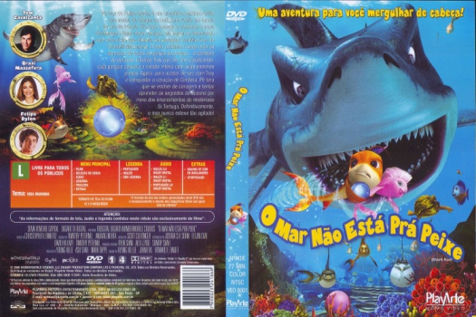

Outro Título:Shark Bait
País:South Korea, 77 minutos
Idiomas falados:Inglês, Português
Gênero(s):Animação, Família
Diretor(s):Howard E. Baker, Kyung Ho Lee, John Fox
Escritor(es):Scott Clevenger
Codec:MPEG-2 (DVD)
Número: 5855


Certificado:L
Sinopse:
Depois de perder tudo, um jovem peixe, o Pi, vai morar com sua família num recife. Lá ele conhece o amor de sua vida, mas descobre que ela já tem os afetos indesejados de um tubarão-bully. Ele deve seguir seu destino para salvá-la e livrar o recife desse tubarão ameaçador para sempre.
Elenco:

Tipo de mídia: DVD5,
Legendas: Inglês, Português, Sem Legendas
Alugado: Não
Tela: Anamorphic Widescreen